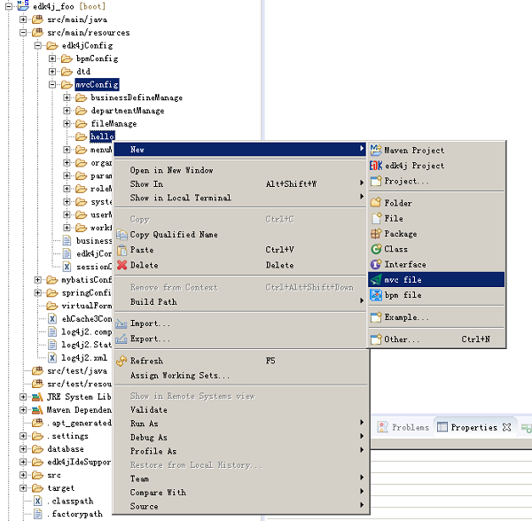
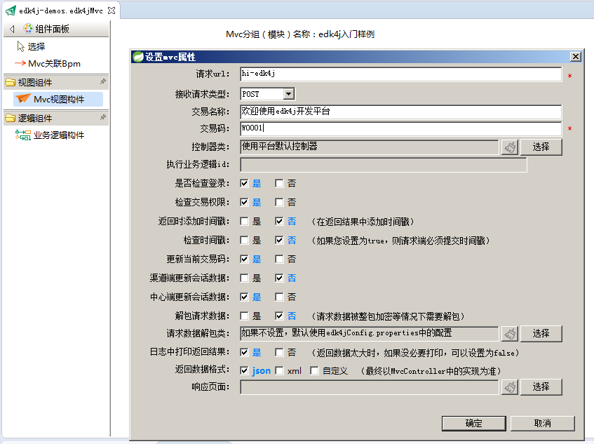
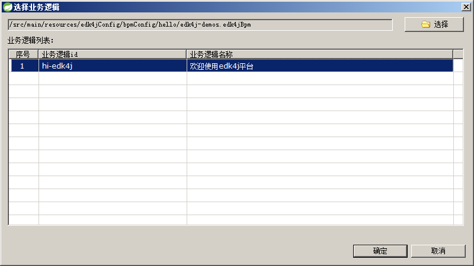
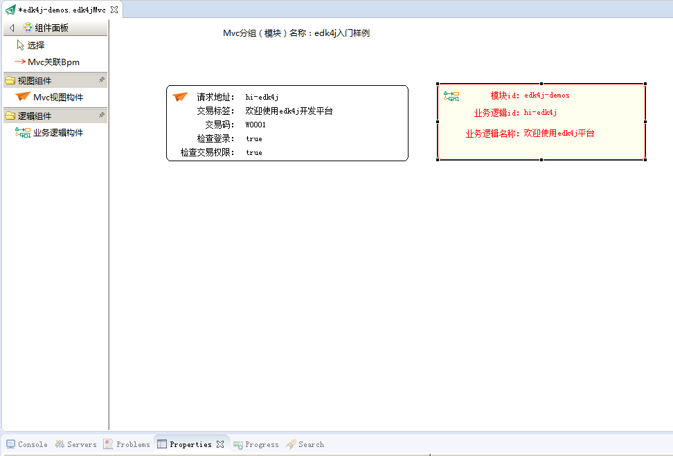
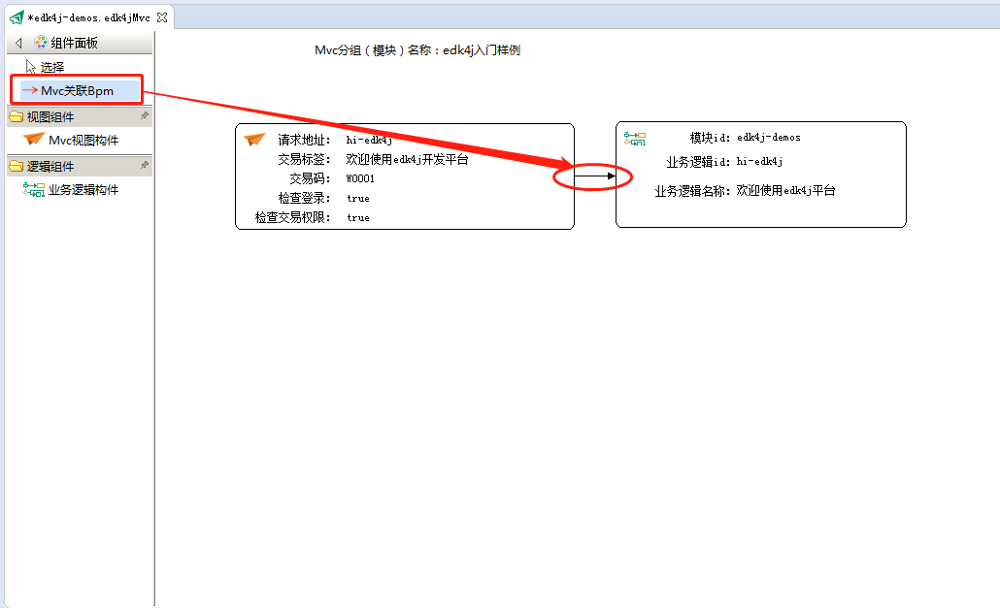
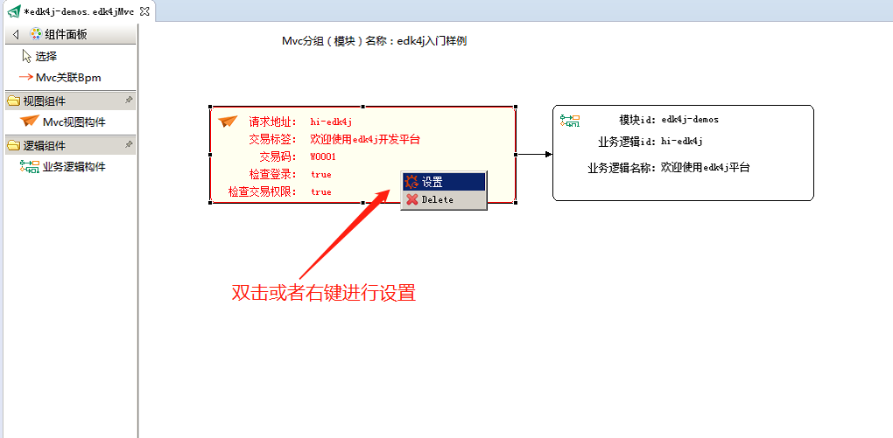
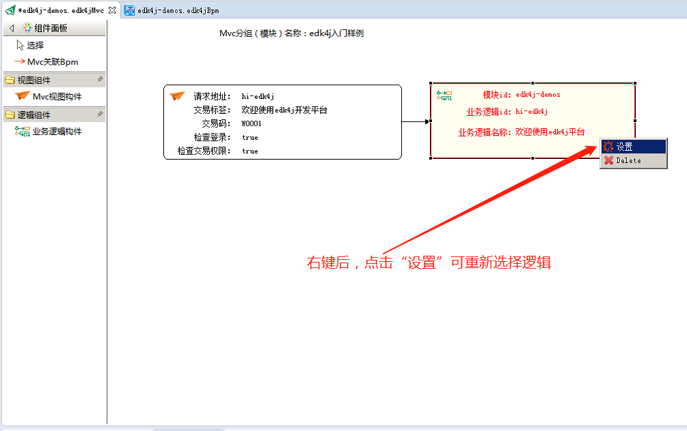

在项目的src/main/resources/edk4j/api文件夹下建立一个业务模块文件夹，然后如图所示右键新建api文件：

按照下面的导航截图，创建api文件：


在左侧组件面板中点一下“Api视图构建”，然后在右边画板上点一下，便可弹出窗口，填写后点OK，便可以创建一个api


在左侧组件面板中点一下“业务逻辑构件”，然后在右边画板上点一下，便可弹出选择业务逻辑的窗口，选择完成后点击ok，便可创建业务逻辑组件到画板中



左侧组件面板中的“Api关联Bpm”是指“为api指定对应的业务逻辑”，其实就是设置<api>节点中的 businessLogicId属性。
如下图所示，我们完成前面的“创建一个api” ，以及“引入一个BPM”，然后需要做的就是“把api指向bpm”

可以右键或者双击具体的api，对其进行设置

你可以右键bpm，对其进行设置，
